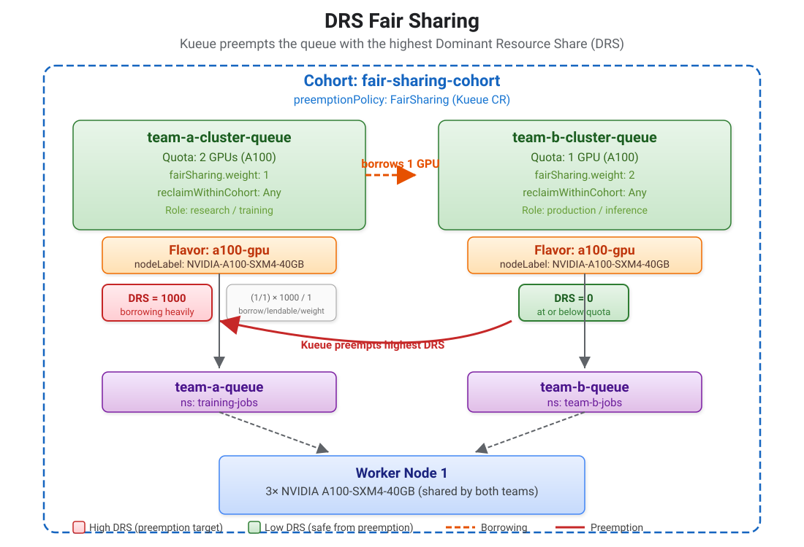

Fair Sharing Between Teams
In Cohort Borrowing and Reclaim^, you used reclaimWithinCohort: Any to let a queue reclaim its lent resources — an all-or-nothing decision that does not consider how much each queue is actually consuming.
Kueue fair sharing goes further: it calculates a Dominant Resource Share (DRS) for each ClusterQueue and uses it to make proportional preemption decisions.
The queue consuming the most relative to its entitlement gets preempted first, weighted by a configurable fairSharing.weight.
This is a fundamentally different preemption mechanism:
-
Classical preemption (
reclaimWithinCohort): "Can I take back what I lent?" — per-queue, all-or-nothing -
Fair sharing preemption (DRS): "Who is using the most relative to their weight?" — cluster-wide, proportional
How DRS Fair Sharing Works
In this chapter, two teams share 3 A100 GPUs in a cohort with different weights:
-
Team A (research): 2 GPU quota, weight 1
-
Team B (production): 1 GPU quota, weight 2 (higher weight = higher entitlement)
Here is what happens step by step:
Phase 1: Team A Uses Its Own Quota
Team A submits 2 training jobs, each requesting 1 GPU. Both jobs are admitted using Team A’s own quota of 2 GPUs.
-
Team A: using 2 GPUs, quota is 2 → not borrowing → DRS = 0
-
Team B: idle, using 0 GPUs → DRS = 0
A DRS of 0 means the queue is at or below its nominal quota. No borrowing is happening, so there is no preemption risk.
Phase 2: Team A Borrows from Idle Team B
Team A submits a 3rd job. It has already used its 2-GPU quota, so Kueue borrows 1 GPU from Team B’s idle capacity.
Now Team A is borrowing, and its DRS rises:
-
Team A: using 3 GPUs, quota is 2 → borrowing 1 GPU
-
DRS = (amount borrowed / lendable capacity in cohort) × 1000 / weight
-
DRS = (1 / 1) × 1000 / 1 = 1000
-
-
Team B: still idle, using 0 GPUs → DRS = 0
You can see this DRS value as weightedShare in the ClusterQueue status.
A weightedShare of 1000 means Team A is using all of the cohort’s lendable capacity relative to its weight.
Phase 3: Team B Submits Work — Preemption
Team B submits a job needing 1 GPU, but its GPU is lent to Team A. Kueue compares DRS scores to decide who to preempt:
-
Team A: DRS = 1000 (borrowing heavily)
-
Team B: DRS = 0 (has not used anything yet)
Team A has the highest DRS, so Kueue preempts Team A’s borrowed workload (the 3rd job). Team B’s job is admitted using its own GPU.
This is the key difference from cohort reclaim: Kueue did not just ask "is someone borrowing?" — it asked "who is using the most relative to their entitlement?" and preempted that queue first.
The Role of Weight
A queue’s fairSharing.weight controls how much of the cohort it is entitled to.
Higher weight = lower DRS for the same usage = harder to preempt.
For example, if Team A had weight 2 instead of 1, its DRS would be 1000 / 2 = 500 instead of 1000. It would still be preempted in this scenario (500 > 0), but with more teams and closer DRS values, a higher weight protects a queue from being the first one preempted.

Key Concepts
-
fairSharing.weighton ClusterQueues — higher weight means lower effective DRS for the same usage (the queue is "entitled" to more) -
preemptionPolicy: FairSharingin the Kueue CR — switches from classical per-queue preemption to DRS-based cluster-wide preemption -
weightedSharein ClusterQueue status — the observable DRS value as an integer scaled by 1000 (0 = at or below nominal, higher = borrowing more) -
reclaimWithinCohort: Anyon ClusterQueues — required for fair sharing to preempt borrowed workloads across queues -
No
borrowingLimitneeded — borrowing is implicit within a cohort; DRS ensures fairness
This chapter also covers Admission Fair Sharing — a separate mechanism that orders pending workloads within a single ClusterQueue based on historical usage per LocalQueue.